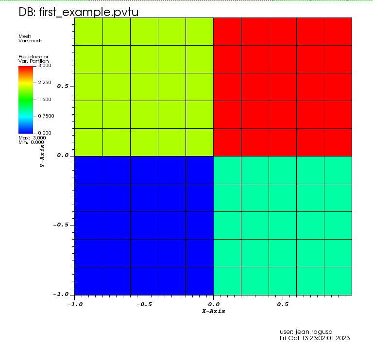

3.1. A First Example
This is a complete simulation transport example. Each aspect of the simulation process is kept to a minimum:
We use an orthogonal 2D grid;
We introduce the concept of domain decomposition (“partitioning”);
The domain is homogeneous (single material, uniform isotropic external source), vacuum boundary conditions apply;
The cross sections are given in a text file (with our OpenSn format); we use only one energy group in this example;
The angular quadrature (discretization in angle) is introduced;
The Linear Boltzmann Solver (LBS) options are keep to a minimum.
Because transport simulations are computationally expensive due to the high dimensional of the phase-space (physical space, energy, direction), they are often performed using several parallel processes (e.g., CPU cores). In what follows, we enforce that this first example be run with 4 MPI processes.
3.1.1. Check the number of processes
This portion of the lua input is not mandatory. The user is free to delete it and run the code with a different number of processes. However, to reproduce the graphics below, one needs to run with 4 MPI ranks.
The lua input performs this following checks:
check_num_procs==nilwill be true when running serially without MPInumber_of_processes ~= num_procswill be true when the number of MPI processes requested is not equal to the preset value of4.
To run the code, simply type: mpiexec -n 4 path/to/opensn -i input_filename.lua
For more runtime options, type path/to/opensn -h for help.
-- Check num_procs
num_procs = 4
if check_num_procs == nil and number_of_processes ~= num_procs then
Log(
LOG_0ERROR,
"Incorrect amount of processors. "
.. "Expected "
.. tostring(num_procs)
.. ". Pass check_num_procs=false to override if possible."
)
os.exit(false)
end
3.1.2. Mesh
Here, we will use the in-house orthogonal mesh generator for a simple Cartesian grid.
3.1.2.1. List of nodes
We first create a lua table for the list of nodes. The nodes will be spread from -1 to +1. Be mindful that lua indexing starts at 1.
-- Setup the mesh
nodes = {}
n_cells = 10
length = 2.
xmin = -length / 2.
dx = length / n_cells
for i = 1, (n_cells + 1) do
k = i - 1
nodes[i] = xmin + k * dx
end
3.1.2.2. Orthogonal Mesh Generation
We use the OrthogonalMeshGenerator and pass the list of nodes per dimension. Here, we pass 2 times the same list of
nodes to create a 2D geometry with square cells. Thus, we create a square domain, of side length 2, centered on the origin (0,0).
We also partition the 2D mesh into 2x2 subdomains using KBAGraphPartitioner. Since we want the split the x-axis in 2,
we give only 1 value in the xcuts array (x=0). Likewise for ycuts (y=0). The assignment to a partition is done based on where the
cell center is located with respect to the various xcuts, ycuts, and zcuts (a fuzzy logic is applied to avoid issues).
The resulting mesh and partition is shown below:

meshgen = mesh.OrthogonalMeshGenerator.Create({
node_sets = { nodes, nodes },
partitioner = mesh.KBAGraphPartitioner.Create({
nx = 2,
ny = 2,
xcuts = { 0.0 },
ycuts = { 0.0 },
}),
})
mesh.MeshGenerator.Execute(meshgen)
3.1.2.3. Material IDs
When using the in-house OrthogonalMeshGenerator, no material IDs are assigned. The user needs to
assign material IDs to all cells. Here, we have a homogeneous domain, so we assign a material ID
with value 0 for each cell in the spatial domain.
-- Set Material IDs
mesh.SetUniformMaterialID(0)
3.1.3. Materials
We create a material and add two properties to it:
TRANSPORT_XSECTIONS for the transport cross sections, and
ISOTROPIC_MG_SOURCE for the isotropic volumetric source
-- Add materials
materials = {}
materials[1] = mat.AddMaterial("Material_A")
3.1.4. Cross Sections
We assign the cross sections to the material by loading the file containing the cross sections. See the tutorials’ section on materials for more details on cross sections.
mat.SetProperty(materials[1], TRANSPORT_XSECTIONS, OPENSN_XSFILE, "xs_1g_MatA.xs")
3.1.5. Volumetric Source
We create a lua table containing the volumetric multigroup source and assign it to the material by passing that array.
num_groups = 1
src = {}
for g = 1, num_groups do
src[g] = 1.0
end
mat.SetProperty(materials[1], ISOTROPIC_MG_SOURCE, FROM_ARRAY, src)
3.1.6. Angular Quadrature
We create a product Gauss-Legendre-Chebyshev angular quadrature and pass the number of positive polar cosines
(here npolar = 2) and the number of azimuthal subdivisions in one quadrant (nazimu = 1).
This creates a 3D angular quadrature.
We finish by optimizing the quadrature to only use the positive hemisphere for 2D simulations.
-- Setup the Angular Quadrature
nazimu = 1
npolar = 2
pquad = aquad.CreateProductQuadrature(GAUSS_LEGENDRE_CHEBYSHEV, nazimu, npolar)
aquad.OptimizeForPolarSymmetry(pquad, 4.0 * math.pi)
3.1.7. Linear Boltzmann Solver
3.1.7.1. Options for the Linear Boltzmann Solver (LBS)
In the LBS block, we provide
the number of energy groups,
the groupsets (with 0-indexing), the handle for the angular quadrature, the angle aggregation, the solver type, tolerances, and other solver options.
-- Setup LBS parameters
lbs_block = {
num_groups = num_groups,
groupsets = {
{
groups_from_to = { 0, 0 },
angular_quadrature_handle = pquad,
angle_aggregation_num_subsets = 1,
inner_linear_method = "gmres",
l_abs_tol = 1.0e-6,
l_max_its = 300,
gmres_restart_interval = 30,
},
},
}
3.1.7.2. Putting the Linear Boltzmann Solver Together
We then create the physics solver, initialize it, and execute it.
phys = lbs.DiscreteOrdinatesSolver.Create(lbs_block)
-- Initialize and Execute Solver
ss_solver = lbs.SteadyStateSolver.Create({ lbs_solver_handle = phys })
solver.Initialize(ss_solver)
solver.Execute(ss_solver)
3.1.8. Post-Processing via Field Functions
We extract the scalar flux (i.e., the first entry in the field function list; recall that lua indexing starts at 1) and export it to a VTK file whose name is supplied by the user. See the tutorials’ section on post-processing for more details on field functions.
The resulting scalar flux is shown below:

-- Retrieve field functions and export them
fflist, count = lbs.GetScalarFieldFunctionList(phys)
vtk_basename = "first_example"
fieldfunc.ExportToVTK(fflist[1], vtk_basename)
3.1.9. Possible Extensions
Change the number of MPI processes (you may want to delete the safeguard at the top of the input file to run with any number of MPI ranks);
Change the spatial resolution by increasing or decreasing the number of cells;
Change the angular resolution by increasing or decreasing the number of polar and azimuthal subdivisions.
3.1.10. The complete input is below:
You can copy/paste the text below or look in the file named tutorials/lbs/first/first_example.lua:
-- Check num_procs
num_procs = 4
if check_num_procs == nil and number_of_processes ~= num_procs then
Log(
LOG_0ERROR,
"Incorrect amount of processors. "
.. "Expected "
.. tostring(num_procs)
.. ". Pass check_num_procs=false to override if possible."
)
os.exit(false)
end
-- Setup the mesh
nodes = {}
n_cells = 10
length = 2.
xmin = -length / 2.
dx = length / n_cells
for i = 1, (n_cells + 1) do
k = i - 1
nodes[i] = xmin + k * dx
end
meshgen = mesh.OrthogonalMeshGenerator.Create({
node_sets = { nodes, nodes },
partitioner = mesh.KBAGraphPartitioner.Create({
nx = 2,
ny = 2,
xcuts = { 0.0 },
ycuts = { 0.0 },
}),
})
mesh.MeshGenerator.Execute(meshgen)
-- Set Material IDs
mesh.SetUniformMaterialID(0)
-- Add materials
materials = {}
materials[1] = mat.AddMaterial("Material_A")
mat.SetProperty(materials[1], TRANSPORT_XSECTIONS, OPENSN_XSFILE, "xs_1g_MatA.xs")
num_groups = 1
src = {}
for g = 1, num_groups do
src[g] = 1.0
end
mat.SetProperty(materials[1], ISOTROPIC_MG_SOURCE, FROM_ARRAY, src)
-- Setup the Angular Quadrature
nazimu = 1
npolar = 2
pquad = aquad.CreateProductQuadrature(GAUSS_LEGENDRE_CHEBYSHEV, nazimu, npolar)
aquad.OptimizeForPolarSymmetry(pquad, 4.0 * math.pi)
-- Setup LBS parameters
lbs_block = {
num_groups = num_groups,
groupsets = {
{
groups_from_to = { 0, 0 },
angular_quadrature_handle = pquad,
angle_aggregation_num_subsets = 1,
inner_linear_method = "gmres",
l_abs_tol = 1.0e-6,
l_max_its = 300,
gmres_restart_interval = 30,
},
},
}
phys = lbs.DiscreteOrdinatesSolver.Create(lbs_block)
-- Initialize and Execute Solver
ss_solver = lbs.SteadyStateSolver.Create({ lbs_solver_handle = phys })
solver.Initialize(ss_solver)
solver.Execute(ss_solver)
-- Retrieve field functions and export them
fflist, count = lbs.GetScalarFieldFunctionList(phys)
vtk_basename = "first_example"
fieldfunc.ExportToVTK(fflist[1], vtk_basename)